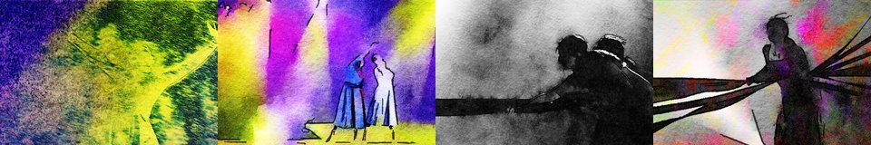

← Async Art — living works · all collections
by Hulki Okan Tabak · Async Art Master #2731 · four-phase · time rule: UTC
Updates four times a day to reflect sunrise / day / sunset / night cycles.

Sunrise 06:00–06:59 · Day 07:00–17:59 · Sunset 18:00–18:59 · Night 19:00–05:59 (UTC)
The viewer shows these states from display copies kept with this site (resized WebP files; the originals are the files below). The full-size files live on IPFS; each is linked on three public gateways, in the order to try them (gateway.pinata.cloud, ipfs.io, dweb.link). Every line says what our own check found: 5 we keep this file pinned, 5 our own copy, pinned here and verified on upload.
bafybeia5f4lxn… gateway.pinata.cloud · ipfs.io · dweb.link — our own copy, pinned here and verified on upload, checked 2026-09-22bafybeiajhgq3p… gateway.pinata.cloud · ipfs.io · dweb.link — our own copy, pinned here and verified on upload, checked 2026-09-22bafybeifugrhat… gateway.pinata.cloud · ipfs.io · dweb.link — our own copy, pinned here and verified on upload, checked 2026-09-22bafybeid3iunvf… gateway.pinata.cloud · ipfs.io · dweb.link — our own copy, pinned here and verified on upload, checked 2026-09-22bafybeidhclzhp… gateway.pinata.cloud · ipfs.io · dweb.link — our own copy, pinned here and verified on upload, checked 2026-09-22Qmdm5BPvpPhQZR… gateway.pinata.cloud · ipfs.io · dweb.link — we keep this file pinned, checked 2026-09-24 11:46QmWCj99DcQwBEb… gateway.pinata.cloud · ipfs.io · dweb.link — we keep this file pinned, checked 2026-09-24 11:46QmWCj99DcQwBEb… gateway.pinata.cloud · ipfs.io · dweb.link — we keep this file pinned, checked 2026-09-24 11:46QmVREmjQnj26jJ… gateway.pinata.cloud · ipfs.io · dweb.link — we keep this file pinned, checked 2026-09-24 11:46QmUn62yTBR8mWt… gateway.pinata.cloud · ipfs.io · dweb.link — we keep this file pinned, checked 2026-09-24 11:46Qmebm4L6xCr9MS… gateway.pinata.cloud · ipfs.io · dweb.link — we keep this file pinned, checked 2026-09-24 11:46Day begins with Fluid Prophecy where the dancer is enjoying a solo spot under the spotlights. Daylight follows Together under the Spotlights where two lead dancers are in a duet of colorful lights. Night commences with Pull which is taken from the third act and the protagonist is being wound up metaphorically and physically. Rest of the night is the disturbing image of To Break Free with scant hope of escape for the leading woman of the third act. Photography by Hulki Okan Tabak from 2019. Photoshoot from dress rehearsals of a dance project about three women and the hardships they endured. Edited various times with final edit on June 2021 to be minted on Async Art. This has been a very…
async.art · OpenSea · Etherscan
Generated archive pages. Content identifiers point to the public IPFS network.